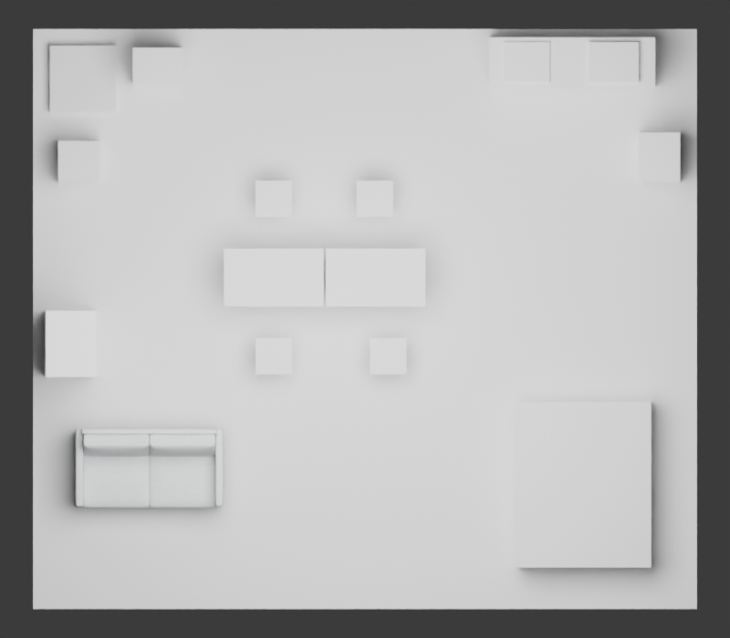

这是第二个完整三维开发项目的CPU执行结果。原始27对象逐值恢复，实际原生变换及精确返回已完成，初态与待客态已导出真实视觉三角形GLB。新增场景生成、模型调用、训练均为0。
B1是人工声明等价案例因子的同一普通算法复跑，不是实际Agent或学习方法对照。本轮支持普通基线足够处理这条明确任务；没有识别案例信息的独立价值，不能推广为“案例/Agent无用”。
| 执行标签 | 完整候选验证 | 提交对象变换 | 保留对象 | 待客几何条件 | 精确返回 | CPU秒 |
|---|---|---|---|---|---|---|
| B0_task_aware_ordinary_CSP | 1 | 4 | 27 | True | True | 4.246757455170155 |
| B1_case_compiled_CSP_diagnostic | 1 | 4 | 27 | True | True | 4.363087683916092 |
共同预处理实际评分55个候选，其中12个满足便宜待客谓词；每标签1个入选候选进入完整检查。两种顺序的中间可达与扫掠也计入实际本地计算。总研究执行器耗时14.105秒，峰值RSS约410.2MiB。另计冷恢复、导出与CPU渲染，见各receipt。
有限候选池中的4次原子变换下界：待客终态的桌子B与椅子B都必须改变，精确恢复也必须分别返回。普通方法达到下界，两个终态状态SHA一致。本证明只适用于当前池、原子动作和操作约定。
左：原始分桌工作；右：合桌待客。代理/材料简化，视图不代表真实使用或偏好验证。结构和顶灯仅在切开预览中隐藏，原生资源与GLB均保留。

家具合并及转换运动已有TVCG2020直接前作；用途解析、功能约束与检查修复已有Function2Scene。仅增加案例提示或用途角色绑定，不足以承担新贡献。
下一项机制必须先在既有真实生成中找到“正确绑定仍未由普通方法解释”的可执行证据，再检验自动决策。当前不应在此简单样例上增加训练或GPU投入，CVPR目标仍未达成。
算法与理论边界：Waterloo 第二开发项目（CPU 实跑）
1. 实际完成
从冻结源码与原始资产恢复完整声明场景，原初始状态逐值一致；27个对象全部保留。
原生RoomScene中实际提交桌子/椅子的2次变换，再反向提交2次，返回状态逐值一致。
两个执行标签分别独立完成相同基线，不是两个不同的学习方法。初态和待客态已导出真实SDF视觉三角形GLB并CPU渲染。
原生对象赋值不等于官方HTTP工具调用；本轮没有Agent、模型推理、训练或从文字新生成整间场景。
2. 强普通方法
公共任务已明确两张桌子合并、座位绑定、通行点与阈值。用当前资产边界产生55个有限联合候选，
共同便宜筛查全部55个，用几何违反数/改动量排序，再对入选候选做原冻结模式、通行、网格相交、运动扫掠检查。
两种单对象移动顺序均检查；联合候选不要求每个中间状态改善目标，但路径和活动可达必须保留。
实际每个标签只需1个完整验证，两者均选42号，最终状态哈希一致。
55个便宜评分是共享预处理，不能省略；也不能写成每组55次完整网格/通行求解。
3. 可证明的局部下界
对固定55个候选逐一枚举，12个满足便宜的待客条件，每个都改变桌子B和椅子B两个对象。
在本协议的一次只修改一个对象的原子操作下，到这些待客终态至少2次；要求精确返回再至少2次。
因此有限候选池上的提交次数下界为4，普通方法已经达到4。不是任意旋转、连续路径或真实物理推拉的全局最优证明。
每个独立、尚未认证的入选终态必须做至少1次协议要求的完整验证；当前已达到这项计数下界。
这说明此例不再能检验“更少提交动作/更少完整终态验证”的收益；便宜筛查开销仍可优化，但不自动构成新机制。
4. 案例信息什么时候才可能有价值
设公共任务和几何约束为C(u,G)，案例解释给出附加条件phi(z)。若在候选集合中C蕴含phi，
则{(z,x):C且phi}与{(z,x):C}相同。没有新增可行性信息，仍可能改变搜索顺序；必须相对强普通传播/启发式计总成本。
若C不蕴含phi，案例会排除原来允许的设计；需要用途证据或独立偏好确认，不能把设计师某个结果直接当作唯一真值。
这是普通约束满足的逻辑事实，不是新定理或新算法。本例的“可分合桌子”已经在公共任务中明说，故手工案例因子重复。
当前B1没有独立实现自动案例抽取/绑定，不能把两次同算法运行称为Agent对照，也不能据此否定案例学习。
5. 训练目标为何暂不启动
本例可提供几何条件标签，不能提供“更适合真实使用者”的独立偏好。全部硬检查能够决定的比较，不足以识别软设计取舍。
需要在同等可行的完整场景之间，确认用途和空间条件带来的差别，或证明自动任务绑定比普通匹配/检索更好；当前均未具备。
不能把人工作用角色、几何阈值和普通规则标成训练创新。现有证据不足以训练新Critic/策略，或扩大昂贵生成批次。
6. 下一步的具体证据要求
保留该场景作为强普通基线和完整资源包，不继续在它上面调整到某个Agent获胜。
下一项可检验环节是：从原始用途与真实资产中自动形成对象—活动绑定，再由共同几何后端生成完整场景。
先找已有真实生成中“几何可完成，但绑定/用途解释不同”的记录；没有这种记录就不制造错误或训练新模块。
对照必须包括明确任务条件的普通规则/约束传播、普通代码感知检索、同模型通用Agent；相同资产和上游动作，计完整成本。
Function2Scene已经覆盖用途解析与功能约束修复，PlanIT式关系约束和TVCG2020转换规划也已存在；上述候选位置尚不是新颖性声明。
限制：研究者迁移房间8x7m，不是原住宅；7个网格实例含6个生成桌椅替代物，11个家具为代理，9个建筑对象。
FCL是表面相交检查且有1e-4m正AABB重叠预筛，非实体穿透深度/包含关系证明。平方身体网格、座位矩形及间隙是操作约定。
未验证脚轮刹车、载荷、坐姿、舒适、材料语义、光声环境或用户偏好。完整场景生成成功保持未知。